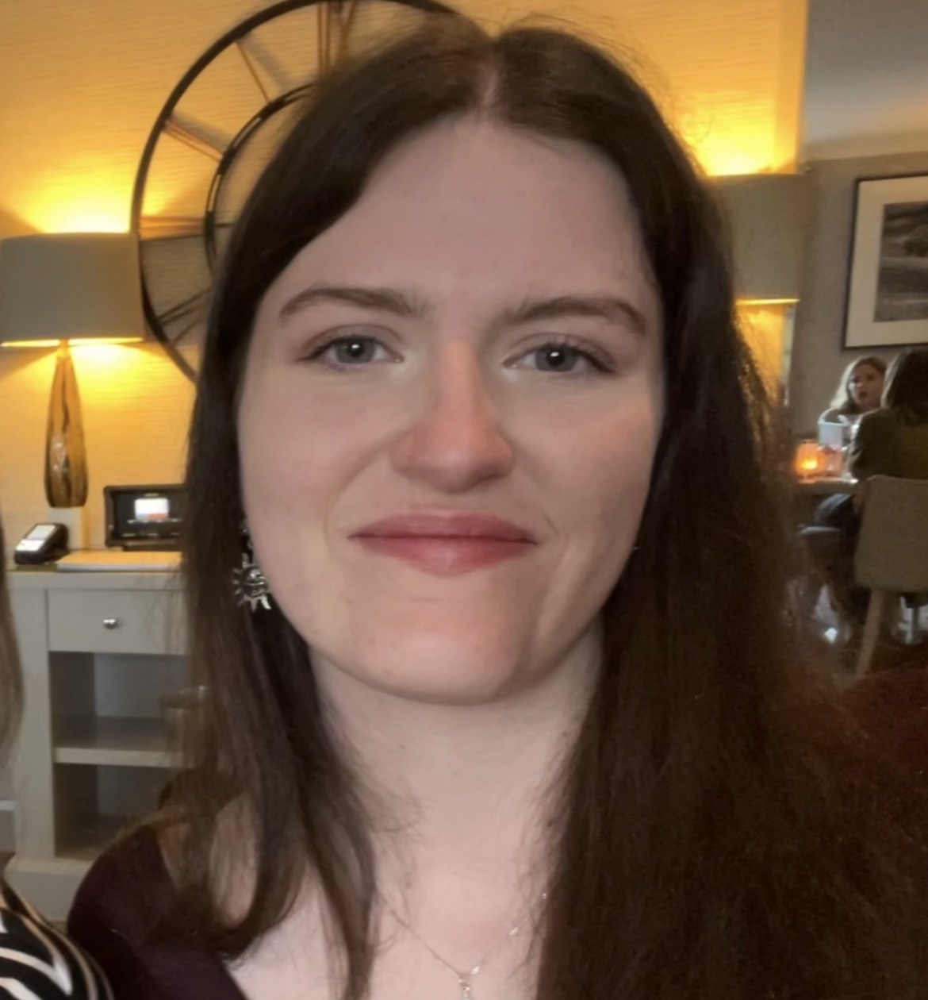

Alice Rennie
Personal Portfolio
Personal Portfolio

Hi I'm Alice! I'm a 4th year student from Abertay University, currently studying Computer Games Applications Development. I've been interested in programming since I was young, and ended up winning the higher computing prize for my high school. In my free time I love reading, playing basketball, and of course - gaming. I'm the secretary of the Women in Games society, while also being a Women in Games ambassador, which focuses on creating safe spaces and introducing women into the industry. I'm also the Abertay Women's Basketball Captain, returning to my role for the second year! My favourite game of all time is Super Mario Galaxy; I'm a big Nintendo Wii fan!
Here is a collection of programs/games I have created!

Post Mortem is a horror-focused adventure puzzle game in which you play as a Detective investigating an abandoned mansion. It was created as part of a group project for university, with us receiving industry mentoring throughout the project. As our game was narrative focused, I created a dialogue system in Unreal Engine 5.6, using interfaces to communicate across different NPCs. I also created an item system to show what objects had been collected throughout the game, and a timer system to add challenge and tension to the game through a stalking enemy.

For 3rd year graphics programming in university, I was tasked with programming a comprehensive scene using DirectX and C++. This was my first experience of programming shaders, and consolidated my knowledge of complex geometry, lighting and texturing, while also teaching me new skills such as post processing, render textures and graphics pipelines. I utilised the vertex and pixel shaders in order to create my scene, while optimising my code by using an hlsli file where I could to reuse code.

For my games AI programming module (NOT GEN AI) I decided to implement and evaluate decision trees for a turn based RPG game. A template was provided to me from the university for the game, allowing me to focus on the AI implementation. The topic intruiged me as I'm a big fan of the Fire Emblem games, and wanted to see some of the theory behind different playstyles, and find out which was the most effective. The application investigated the effectiveness of different AIs when adjusting their priorities and options. This was achieved through the implementation of 27 different decision trees for an enemy team against a control team in a turn-based game.

Wager of the Wolf was a group project with the goal of utilising the functionality of the PlayStation 5 controller. We prioritised implementing tilt controls and haptic feedback through use of the triggers and controller vibration. I also created an audio system through accessing the player state to choose the correct audio track to be played for each action (eg: running, sliding, attacking, jumping). This project was programmed using university made framework, and PS5 development kits.


This was my first introduction to graphics programming, using geometry to create a scene. I gained a deeper understanding of vertex mapping in order to render different simple shapes such as cone, cylinder, cube and sphere. I had two perspective cameras: a free roaming camera, and a rotating camera that were calculated using projection matrices. I was also introduced to transformation hierarchies, and produced a fruit bowl with individual transformations, and a squirrel character with a dynamic tail, moving up and down.

Abyssal Descent was my first group project, and the first game I created in university, coded using C++ and SFML. It helped me understand how to make large scale object oriented programs, and made me more comfortable using pointers in a game project. It was originally a group project which was later taken by each member and individually expanded. I decided to add in cutscenes and a dialogue system, in order to introduce the player using a tutorial. I also refined some of the items and weapons in order to improve game feel. I briefly played around with audio, and created a near death filter to display across the screen (baby's first post processing effect!)
Here is a collection of my projects that I refuse to let go of...

Carnimals was a summer project to reinforce the skills I learnt from Unreal Engine programming in the previous semester. A prototype was created within two weeks, including character customisation, a lobby scene and a minigame. This project was my first instance of mobile development, and required me to research and implement UE5's mobile porting. I used android studio to emulate a phone on my PC, and also transferred the prototype so it was physically playable. I would love to revisit this project, with the possibility of creating more minigames to enrich the gameplay.

Third year of university gave me my first time in Unreal Engine, tasking me with researching and implementing a game mechanic of my choice. I chose to implement a parry, counter and blocking system. I created specific time windows in which the different mechanics would occur, and a cooldown window in order to add challenge and skill to the mechanic. I made this system compatible with UE5's combat pack. In the future, I would like to expand this to create a combat wave prototype, where you must defeat enemies using the damage you inflict from the counter timing.